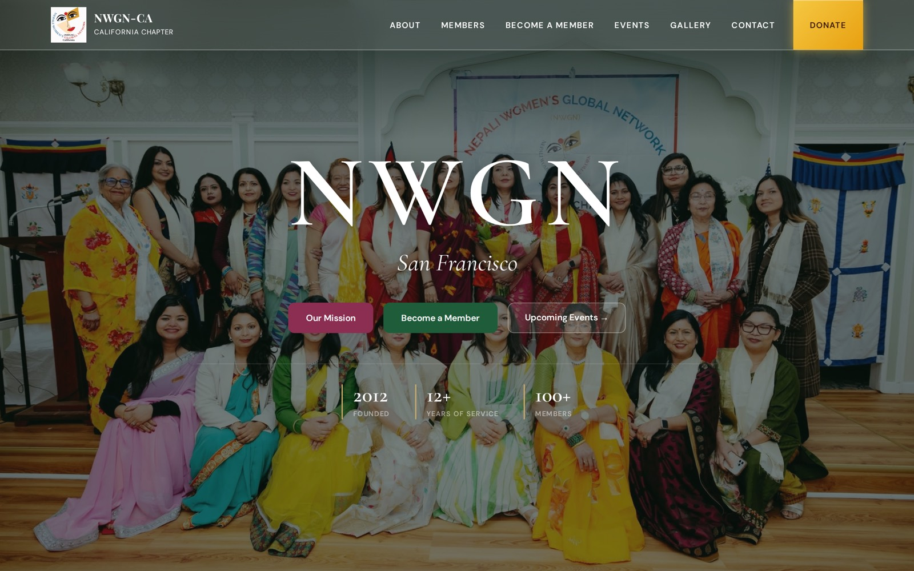
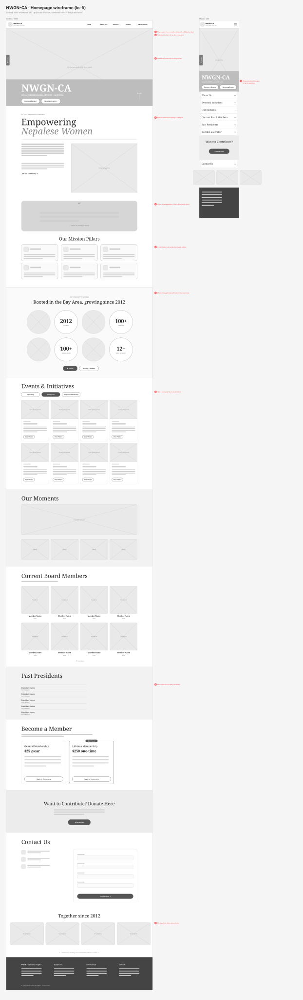
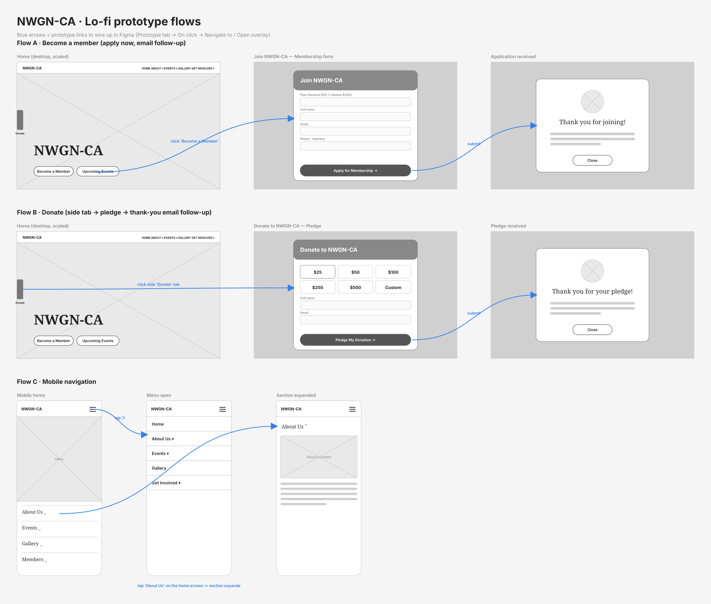
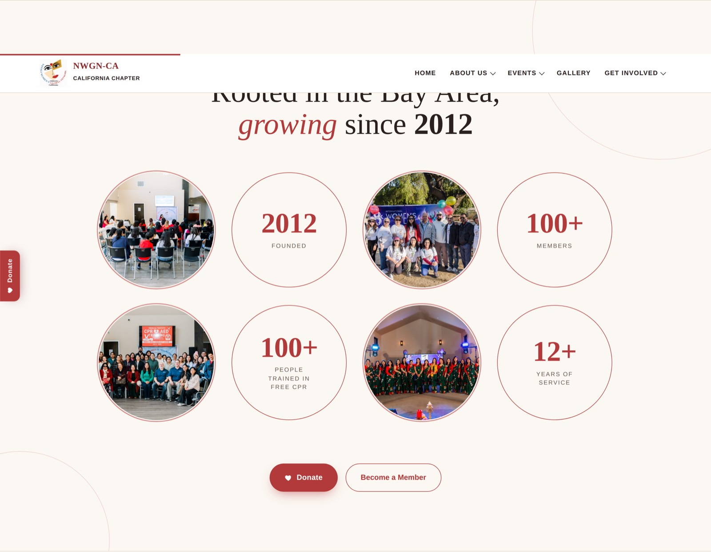
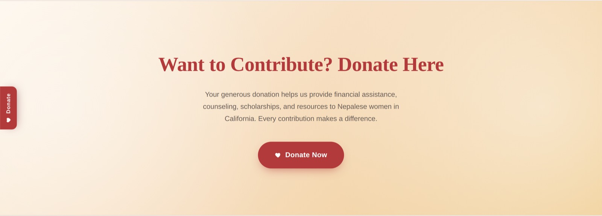
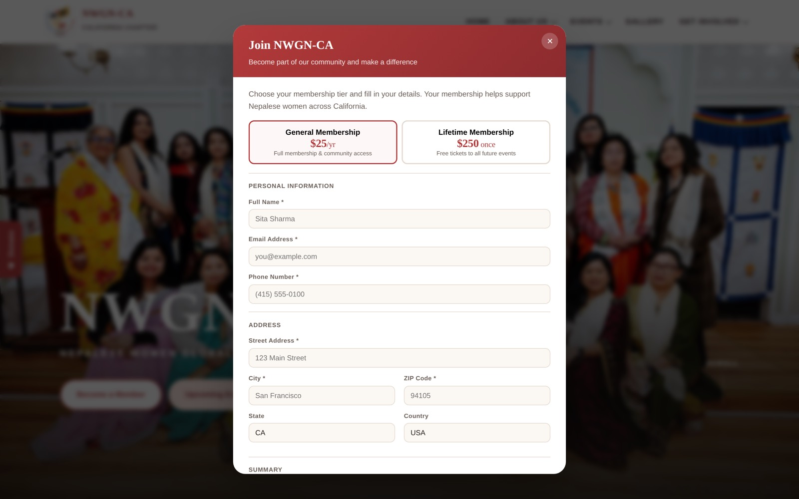
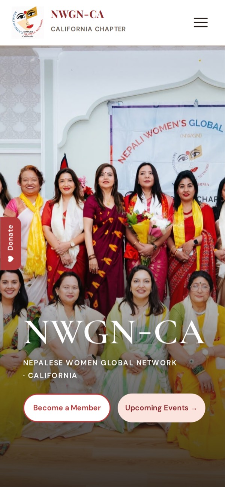
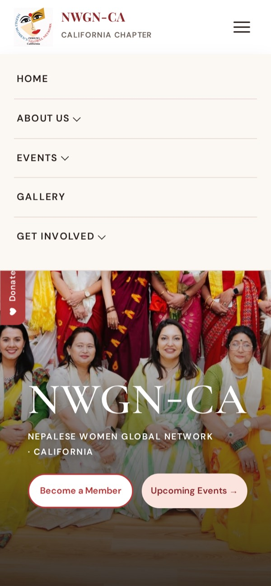

NWGN-CA —
A Non-profit's New Home
Redesigned a Bay Area non-profit's website into an elegant, warm, mobile-first home for Nepalese women, with clearer ways to join, donate and see the community.

The problem
NWGN-CA is the California chapter of the Nepalese Women Global Network, a women-led 501(c)(3) non-profit founded in 2012 in the San Francisco Bay Area. Its old site was hard to use and didn't feel like the community. Its audience is Nepalese women of all ages, so it needed to feel elegant and warm, not playful, and work well on phones.
Faces were hidden
A dark overlay, a crowded centered hero and the menu bar covered the members in the photo.
Hard to join or give
Donating and becoming a member were hard to find, and mixed plum, green and yellow colors had no system.
Content was lost
The original site had gone down, so the mission, board roster and event history had to be recovered from the Internet Archive.
From a crowded overlay to a clear welcome.

Goals
- Put real members' faces front and center.
- Make Donate and Become a Member impossible to miss, without being pushy.
- A calm, premium look: soft rich palette, serif headings, generous white space, slow motion.
- Fully responsive and accessible: contrast, alt text, reduced-motion support.
- Low maintenance: plain static files the board can host for free on GitHub Pages.
From recovered content to a live site.
- Content audit and recovery. I pulled the old site's mission, goals, board roster and event history from the Internet Archive and reconciled the 2025–26 board list.
- Moodboard and references. Namaste Direct for page flow, People for Guatemala for the hero transition and moving photo strip (adapted from playful to elegant), Rise Up Together for the donate button, Rotary Foundation for the circle stats band, Kimball Foundation for the editorial "Empowering Women" block, Lusion for smooth scrolling.
- Lo-fi wireframes. Section order, hero layout, circle stats band and the side Donate tab.
- Lo-fi prototype. Three key flows: join, donate and mobile navigation.
- Hi-fi build and iteration. About 60 rounds of small, screenshot-reviewed changes to color, type, spacing and mobile.
- Launch. Custom domain, DNS, HTTPS, a privacy policy, spam protection and a stress test.


Warm, calm, and easy to act on.
- The hero photo opens from a rounded window to full bleed, then the title rises in: a slow unveiling of the community instead of a static banner.
- Title block bottom-left, photo below the nav, so every member's face stays visible at any window size.
- A palette taken from the logo: wine, rose, marigold, ivory and ink, replacing the bright, mixed colors with something warm and mature.
- Serif headings with a clean sans body, and bold numerals for stats: an editorial voice that stays readable.
- A fixed vertical "Donate" tab on the left edge plus Donate in key sections, so it's always reachable without crowding the navigation.
- Photo and stat circles ("2012 Founded · 100+ Members · 100+ trained in free CPR · 12+ years") for social proof at a glance.
- On mobile, every section collapses to a tap-to-open bar, so a long one-page site stays scannable on a phone.
- Event flyers shown whole over a blurred copy of themselves: no half-cropped flyers and consistent card heights.
- "Apply now, email follow-up" for membership and donations, so the chapter can launch before setting up online payments. Nothing is charged on the site.
- Past presidents as a plain ruled list. Client feedback said cards with initials felt "AI-generated".


Two clear actions, on any screen.
Joining and donating are short forms with clear success states. On phones the long page becomes a stack of tap-to-open bars with a hamburger menu.



Motion and forms that respect the visitor.
- Reduced motion: all reveals, parallax, smooth scrolling and the moving photo strip switch off for people who ask for less motion.
- Alt text on every image, keyboard focus outlines, a skip link and 44px minimum touch targets on phones.
- Tested at 1920, 1440, 1366, 1280, 1024 and 390 px widths with no horizontal scroll.
- Spam protection on all five forms: a hidden honeypot field and a 3-second speed check.
- Security fix: removed a client-side "admin password" that anyone could read in the page source.
Outcome
A real chapter, online with a site it can maintain itself.
Built to be maintained. The site is plain static files hosted free on GitHub Pages, so the board can update it without a developer. Next steps: online payments, an events CMS and a Nepali-language toggle.